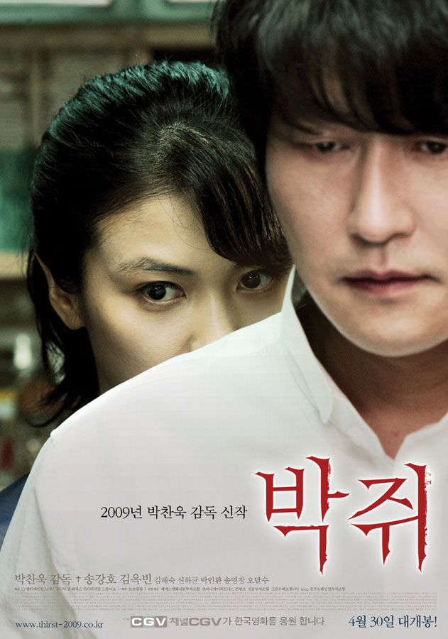

Thirst
Park Chan-wook
Sang-hyun (Song Kang-ho) is a Catholic priest who volunteers at the hospital, providing ministry to the patients. He is well respected for his unwavering faith and dedicated service, but he secretly suffers from feelings of doubt and sadness. Sang-hyun volunteers to participate in an experiment to find a vaccine for the deadly Emmanuel Virus (EV). Although the experiment fails, and Sang-hyun is infected with the seemingly fatal disease, he makes a complete and rapid recovery after receiving a blood transfusion.
News of his marvelous recovery quickly spreads among the devout parishioners of Sang-hyun’s congregation, and they begin to believe that he has a miraculous gift for healing. Soon, thousands more flock to Sang-hyun’s services. Among the new churchgoers are Kang-woo (Shin Ha-kyun), Sang-hyun’s childhood friend, and his family. Kang-woo invites his old friend to join the weekly mahjong night at his house, and there, Sang-hyun finds himself attracted to Kang-woo’s wife, Tae-ju (Kim Ok-bin). Sang-hyun later relapses into his illness and wakes in dire need of shelter from the sunlight, having become a vampire.
The Korean version